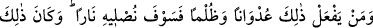
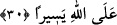

“Nefis” ile kendi cinslerinden olan mü’minlerin kastedildiği de söylenmiştir. Çünkü
bütün mü’minler bir tek nefis gibidirler.
“Şüphesiz Allah size karşı çok merhametlidir.” Yâni, neyi emretti ve neyi
yasakladıysa size olan aşırı merhametindendir. Mânâ şöyledir: Allah size karşı çok
merhametlidir, ey ümmet-i Muhammed! İsrailoğullarına nefislerini öldürmeyi emrettiği
halde size yasaklamıştır.
30- Kim düşmanlık ve zulüm ile bunu (haram yemeyi veya öldürmeyi) yaparsa
(bilsin ki) onu ateşe sokacağız; bu ise Allah’a çok kolaydır.
“Kim düşmanlık ve zulüm ile”; yâni, haddi aşarak ve hak etmediği davranışlar içine
girerek demektir. “Düşmanlık” ile, başkasının hakkına tecâvüz etmenin, “zulüm” ile de
nefsi cezâya mâruz bıraktığı için nefse zulmetmenin kastedildiği söylenmiştir.
“Bunu yaparsa”, yâni nefsini öldürme ve daha önce zikredilen diğer haramları
işlerse “onu cehenneme,” azâbı şiddetli, korkunç husûsî bir ateşe “sokacağız.”
girdireceğiz. “Bu” cehenneme sokma fiili, sebepler gerçekleştiği ve bunu menedecek
herhangi bir güç de bulunmadığı için “Allah’a kolaydır.”
İmam Fahreddin Razî şöyle diyor: “Allah’ın kudretine nisbetle mümkün varlıkların
tamamı eşittir. Böyle olunca bazı fiillerin Allah’a birtakım fiillerden daha kolay
olduğunu söylemek muhal olur. Buradaki hitap bizim kendi aramızda bilinen mânâda
nâzil olmuştur. Yâhut bunun mânâsı, tehdîdde mübalağadır. Bu da hiç kimsenin ondan
kaçmaya ve imtinâ etmeye gücü yetmez demektir.
Şu halde akıllı olan helâk edici davranışlara düşmekten kaçınmalı ve herkesin hakkına
titizlikle riâyet etmelidir. Allah Teâlâ da burada nefsi korumakla malı korumayı beraber
zikretmiştir. Çünkü mal, nefsin ayakta kalmasına, olgunluk ve fazîletlerini tam olarak
elde etmesine sebep olduğu için nefsin kardeşidir. Bu sebeple şöyle denilmiştir:
Zengin işidir vakıf kurmak, yolcuları ağırlamak,
Zekat fitre vermek, köle âzâdı, kurban ve hacca varmak.
Eğer mal kazanmaya muvaffak kılındıysan, buna şükret. Malın yoksa zenginlikten
sonra fakirleşen bazı insanların fakirlikten duydukları aşırı elem ve rahatsızlık yüzünden
yaptıkları gibi kendini parçalama ve öldürme. Rasûlullah (s.a.v) şöyle buyurur: “Kim
dünyâda bir şeyle kendini öldürürse kıyâmet gününde onunla azâb olunur.”[3]
(Rasûlullah (s.a.v) yine şöyle buyurmuştur: “Sizden önceki ümmetlerden birinde bir
adamın yarası vardı. Bundan dolayı rahatsızlandı ve bir bıçak çıkarıp elini kopardı.
Fakat elinden o kadar kan aktı ki sonunda öldü. Allah Teâlâ bunun üzerine şöyle